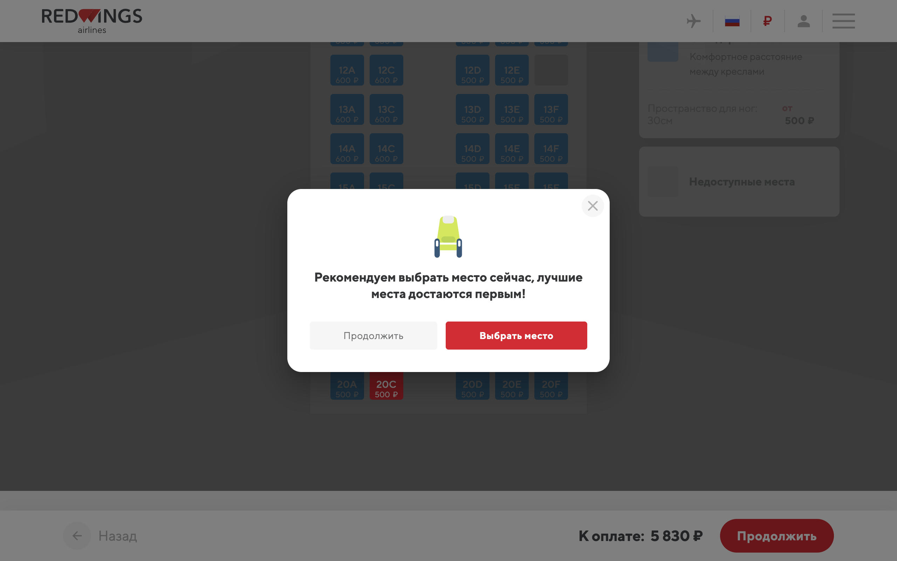
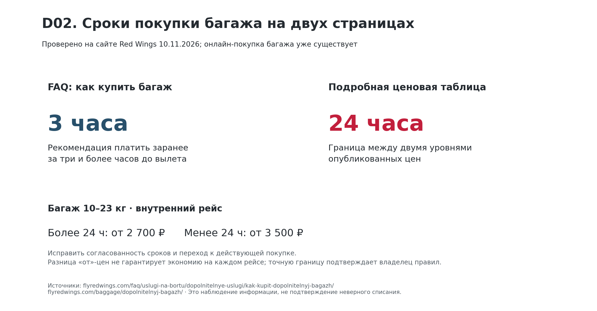
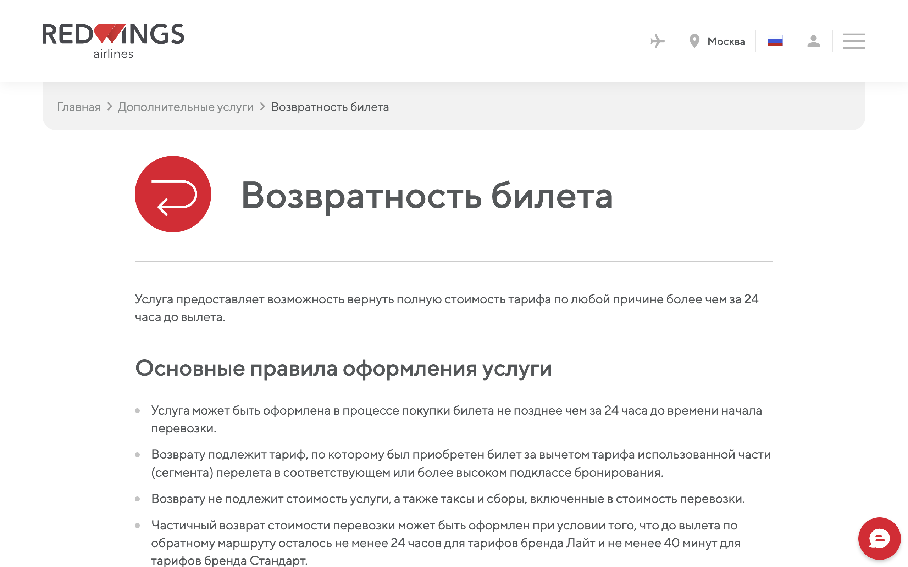

Можно ли купить билет, добавить услуги и решить основные вопросы в один клик. Что у Red Wings уже хорошо, что проверено на сайте 10 ноября 2026 года и что предлагаем, чтобы цифровые сервисы помогали маршрутной сети и цели стать перевозчиком №2.
← Панель кейса: хаб или прямые рейсыСравнение с двумя крупными конкурентами по магазину приложений RuStore и сайтам авиакомпаний, ноябрь 2026 года.
| Red Wings | S7 | «Аэрофлот» | |
|---|---|---|---|
| Оценка приложения в RuStore | 3,0 · 54 оценки |
4,8 · около 8 тыс. |
3,3 · около 7 тыс. |
| Скачивания | больше 70 тыс. | больше 1 млн | больше 2 млн |
| Программа лояльности | нет | S7 Priority | «Аэрофлот Бонус» |
| Уведомления об изменении рейса | нет, по отзывам | открытие регистрации, статус рейса | статус, выход на посадку, задержки, отмены |
| Поддержка | контактный центр 24/7 | чат-бот 24/7 с переходом к оператору | — |
| Вокруг перелёта | единый билет самолёт + другой транспорт | отели, экскурсии, аренда авто; подписка с «Яндекс Плюсом» за 199 ₽ в месяц | мили у партнёров, подарочные сертификаты |
| Частые жалобы | брони не сохраняются, не проходит оплата, сбои входа и регистрации | — | — |
Три пути пройдены на сайте Red Wings 10.11.2026 на рейсе Екатеринбург — Омск (WZ-5071, 20 ноября). Каждое изменение правит то, что уже работает, без новой системы продаж. Сметы — плановые оценки команды при 20–35 тыс. ₽ за человеко-день; эффект проверяется A/B-тестом до внедрения.
Если пассажир отказался выбирать место, сайт показывает повторное окно с предложением всё-таки выбрать. Предлагаем назвать кнопку «Продолжить без выбора места» и проверить путь без повторного окна. Допуслуги остаются в продаже.

Справка советует покупать багаж за три часа до вылета, а таблица цен меняет цену на границе 24 часов: багаж 10–23 кг на внутреннем рейсе стоит от 2 700 ₽ раньше и от 3 500 ₽ позже. Предлагаем одно правило для справки, таблицы и предложения при покупке и ссылку в «Мои бронирования».

Общая инструкция называет тариф «Лайт» невозвратным и не упоминает платную услугу возвратности, которая уже продаётся. Предлагаем короткие развилки: где куплен билет, есть ли услуга возвратности, сколько осталось до вылета — и сразу нужный канал.

Каждое предложение связано с маршрутной стратегией: хаб в Омске, прямые рейсы между регионами, рост шагами по мере поставок самолётов. предложение команды
Стыковка через Омск и Екатеринбург в одном билете с защитой: если первый рейс опоздал, пассажира пересаживают бесплатно.
Для сети: продаёт пересадочный хаб без строительства большого узла.
При задержке или отмене — уведомление, другой рейс или возврат в один клик, ваучер на питание или отель. Внутри — автоматический пересчёт ротаций самолётов и экипажей.
Для сети: хаб чувствительнее прямых рейсов к закрытию неба, автоматика удерживает пассажиров у Red Wings.
Сохранение броней, оплата, вход и регистрация без сбоев; уведомления об открытии регистрации, изменении рейса, выходе на посадку. Цель — оценка приложения 4,5 и выше.
Для сети: меньше брошенных покупок на новых маршрутах.
Багаж, место и питание одним пакетом и в момент регистрации.
Для сети: запас на случай, если государство перестанет возвращать часть цены керосина. Без этого возврата хабу в Омске не хватало около 735 ₽ на пассажира — это одна допуслуга.
Сохранённые документы и карты, подписка на снижение цены.
Для сети: разгружает контактный центр в дни сбоев.
Предиктивное ТО SSJ, планирование экипажей и расписания, наша модель сети как инструмент планирования.
Для сети: исправность SSJ около 77%; каждый пункт исправности — дополнительные часы в воздухе без покупки самолётов.
Что есть у Red Wings по данным сайта и что добавить по опыту других перевозчиков.
| Для кого | Сейчас у Red Wings | Предлагаем |
|---|---|---|
| Люди с инвалидностью | Помощь через контактный центр или справочную аэропорта; кресло-коляска бесплатно | Онлайн-заявка при покупке билета, статус заявки, места рядом для сопровождающего |
| Незрячие и слабовидящие | Собака-поводырь бесплатно | Сайт и приложение, доступные для экранного диктора; крупный шрифт |
| Глухие и слабослышащие | — | Текстовый чат вместо звонка, видеосвязь с сурдопереводчиком, текстовые объявления |
| Дети с аутизмом | — | «Репетиция полёта» вместе с аэропортом, как у Air Astana; отметка о скрытой особенности в брони |
| Семьи с детьми | Перевозка детей без сопровождения | Места рядом бесплатно, семейный счёт баллов |
| Пассажиры с питомцами | Салон до 8 кг; отдельное кресло до 23 кг | Выбор кресла для питомца онлайн, подсказка по ветдокументам |
| Беременные | Правил на сайте не нашли | Понятная страница с правилами |
| Льготники | Правил льготных тарифов на сайте не нашли | Подсказка «вам положен льготный тариф» при покупке |